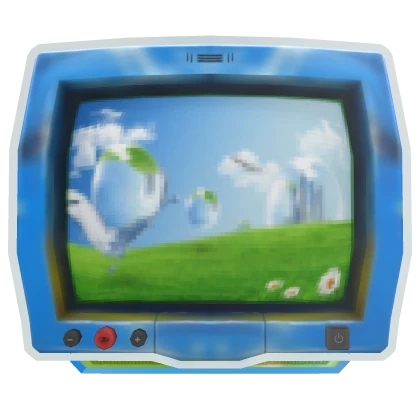

Exploring Frutiger Aero!
What is Frutiger Aero?
Frutiger Aero Avatars
Colors of Frutiger Aero
The Frutiger Family
Wake up…I said, wake up!
You’re one of the first few to try the new “warping to the new millennium! Machine”. Before you enter into the new millennium, we hope what information you gather here you’ll take back to your present and make a difference!
Choose what to do
below!
